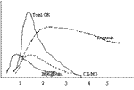

Cardiac Markers
INDICATIONS
Suspected cardiac damage.
Suspected acute coronary syndrome.
top home
CHEMISTRY
When cardiac muscle lysed, it releases a variety of markers.
Myoglobin
Oxygen carrying molecule found in muscle.
CK
Involved in energy supply to muscle.
CK-MB is specific for cardiac muscle.
Troponins
Involved in the contractile filaments of muscles.
Trop T, I, C.
T is the most useful.
Others
Also used to do LD and AST.
Both very non-specific and no longer have a useful role.
top home
INTERPRETATION

Myoglobin
Non-specific but is the earliest to rise.
Appear within first 6 hours.
Total CK
Elevated total CK is non-specific.
But serial measurements can be useful and a rise may be seen even with a
small MI.
Starts to rise 4-12 hours post-MI and remains elevated for 2-3 days.
CK-MB
Specific for cardiac myocytes.
Relative Index (CK-MB as a % of total CK) is important.
<1.0, CK-MB <4.0 - MI excluded.
>2.0, CK-MB >4.0 - MI probable.
<2.0, CK-MB >4.0 - MI inconclusive.
Troponins
More sensitive and specific than CK or CK-MB.
Usually none in the blood - any elevation is an indicator of myocyte
damage.
Useful prognostically: higher 30 day mortality if troponin positive (11.8
vs 3.9%).
Useful for risk stratification (refer acute coronary syndromes iCARD).
Rise 4-12 hours after onset of symptoms.
(about the same time as CK, or slightly earlier).
50% positive within 4-5 hours, 99% by 12 hours.
Ideally measure 6 hours after onset of symptoms.
Remain elevated for 7 (TnI) to 10 days (TnT).
50% become negative at 7 days.
May be elevated by renal failure - TnT especially, TnI to a lesser extent.
top home